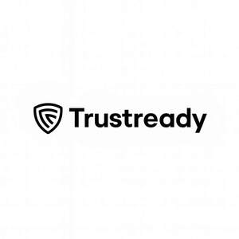

Trade Mark Journal No.2025/046 14 November 2025
UK00004282457 23 October 2025 (9,35,41,42,45)

- Class 9
- Downloadable and cloud-based computer software for governance, risk and compliance (GRC) management; mobile applications for audit-evidence collection, compliance dashboards and offline audit capabilities; computer software for automating information-security, data-privacy, audit and regulatory-compliance processes. Software for managing and monitoring compliance with multiple frameworks, including existing and future standards and regulations such as SOC 2, ISO 27001, GDPR, HIPAA, NIST, PCI DSS, Cyber Essentials, NHS DSPT, DTAC, ISO 42001, DORA (Digital Operational Resilience Act) and other AI-governance or regulatory frameworks. Software incorporating agentic artificial intelligence for automated compliance monitoring, audit assistance and policy management, including AI-driven compliance officers, governance copilots and autonomous advisory agents; software for identity- and access-management (IAM), authentication, authorization, single sign-on (SSO), multi-factor authentication and privileged-access control in compliance contexts. Software for control mapping, audit-evidence collection, document automation, policy management, compliance reporting and analytics; software for asset-inventory management, IT-security configuration monitoring, vulnerability scanning and automated discovery, scanning and classification of data to detect personal or sensitive information (PII, PHI, PCI); software for threat detection, anomaly and behavioural analytics, and compliance monitoring across cloud, hybrid and multi-cloud environments; software integrations for DevOps and SecOps teams to automate security-posture and compliance workflows. Software for third-party and vendor-risk management, due-diligence automation, security-questionnaire handling and continuous vendor-risk monitoring; downloadable computer software for penetration-testing orchestration, incident-response tracking and remediation workflows; software utilising distributed-ledger technology for immutable audit trails and compliance verification; software integrations via APIs and webhooks for data-driven compliance and risk management.
- Class 35
- Business consultancy and advisory services relating to governance, risk management and compliance; advisory and assistance in preparation for compliance audits and certifications including existing and future frameworks such as SOC 2, ISO 27001, GDPR, HIPAA, NIST, PCI DSS, Cyber Essentials, NHS DSPT / DTAC and AI-governance frameworks including ISO 42001. Business-continuity and disaster-recovery planning, and operational-resilience advisory services; internal-audit support, execution and reporting; conducting and coordination of internal and external compliance audits for certification and regulatory frameworks; provision of internal-audit services, audit-programme management and readiness assessments. Business-risk assessment and advisory services including third-party and vendor-risk management, supply-chain-compliance assessments, environmental, social and governance (ESG) and sustainability compliance including carbon-accounting and CSRD/TCFD reporting, and audit-readiness consulting. Advisory services relating to anti-money-laundering (AML), Know Your Customer (KYC) and financial-crime compliance for regulated entities; advisory and managed services delivered through human and AI-enabled virtual CISO (vCISO) and virtual Compliance Officer models. Business-process-improvement consulting in relation to security, privacy and regulatory standards; compilation of compliance data and benchmarking for business purposes.
- Class 41
- Providing integrated educational and training services via an online governance, risk and compliance (GRC) platform; provision of online courses, workshops and certification programmes covering current and future compliance standards including ISO 27001, SOC 2, GDPR, Cyber Essentials, NHS data-security frameworks and AI-governance standards such as ISO 42001; development and dissemination of educational materials and e-learning modules for employee security awareness and audit preparation; operation of an online training portal for compliance and internal-audit professionals.
- Class 42
- Software as a Service (SaaS) and Platform as a Service (PaaS) for compliance monitoring, risk management, control automation and audit collaboration; providing temporary use of online non-downloadable software for managing current and future security, privacy and compliance frameworks, including SOC 2, ISO 27001, HIPAA, GDPR, NIST, PCI DSS, Cyber Essentials, NHS frameworks (DSPT / DTAC), ISO 42001, DORA (Digital Operational Resilience Act) and AI-governance or ethical-AI compliance standards. Providing online non-downloadable software featuring agentic artificial intelligence for automated governance, risk assessment, remediation and audit workflows, including AI-powered virtual compliance officers, virtual CISOs (vCISO) and governance copilots. Providing online non-downloadable software for ESG and sustainability compliance including carbon-accounting and CSRD/TCFD reporting; business-continuity management, disaster-recovery orchestration, crisis-management workflows and operational-resilience testing; identity-governance and administration (IGA), zero-trust security and privileged-access management; AML, KYC and financial-crime prevention. Providing online non-downloadable software for threat detection, behavioural analytics and compliance monitoring for DevOps and SecOps teams across cloud, hybrid and multi-cloud environments; policy management, document automation, vendor-risk management, supplier due-diligence automation and continuous third-party-compliance monitoring. Providing collaboration portals and workflow tools for internal and external auditors to manage evidence, perform assessments and generate audit reports; APIs, workflow automation and data integration for security and compliance monitoring; hosted trust-centre dashboards and automated disclosure portals for transparency reporting; distributed-ledger technology for immutable audit trails and compliance verification. Information-security testing, assessment and assurance services; conducting vulnerability assessments, penetration testing and configuration reviews of computer systems, networks and cloud environments; provision of secure test environments and certification labs for evaluating compliance with information-security standards; consultancy relating to security testing and validation of digital systems; technical consulting in the fields of information-security, data-protection, privacy management and regulatory compliance.
- Class 45
- Consultancy in the field of data-protection compliance, privacy regulations and certification frameworks; legal and regulatory advisory services relating to governance, risk, ethics and compliance; management of data-subject-access requests, consent and privacy-rights workflows; policy drafting and template provision for corporate governance and regulatory adherence. Advisory services in the field of NHS information-governance and data-protection compliance; advisory services relating to penetration-testing compliance, incident reporting and legal aspects of cyber-security audits; virtual Chief Information Security Officer (vCISO) and virtual Data Protection Officer (vDPO) services for security governance, incident-response coordination and regulatory-compliance oversight.
Maventekk Ltd